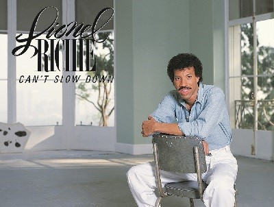
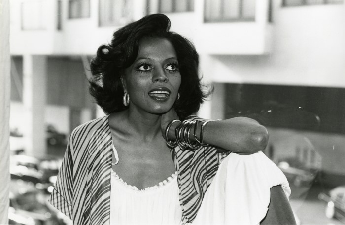

bayllasen


READ
LIONEL RICHIE: A LIFE WRITTEN IN SONG
 For Lionel Richie, who was recently awarded the Library of Congress'
Gershwin Prize for lifetime achievement, performing comes naturally.
Read More
READ
THE ENIGMA : DIANA ROSS'S UNSTOPPABLE DRIVE
 In Secrets of a Sparrow, the archetypal diva explained her rise to the
top—and how “with every achievement, with every move I...
Read More
ABOUT US:

NERVOUS RECORDS WESBITE
Nervous Records skillfully captures the essence of the 60s and 70s, distilling the very spirit of each musical moment that defined these dynamic decades.
IMMERSIVE TIME TRAVEL
Immerse yourself in an unparalleled journey of time travel through Nervous Records, where the music of the 60s and 70s comes alive with vivid authenticity.
AESTHETIC TIME MACHINE
Nervous Records serves as an aesthetic time machine, transporting users to the visually and musically rich landscapes that characterized the 60s and 70s.